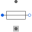

FlangeSupportShaft and support |
Information
This information is part of the Modelica Standard Library maintained by the Modelica Association.
This partial model defines shaft and housing connector for loss models.
Positive torque tau acts as braking torque.
Connectors (2)
Extended by (6)
|
Modelica.Magnetic.QuasiStatic.FundamentalWave.Losses Model of permanent magnet losses dependent on current and speed |
|
|
Modelica.Magnetic.QuasiStatic.FundamentalWave.Losses Model of stray load losses dependent on current and speed |
|
|
Modelica.Electrical.Machines.Losses.DCMachines Model of stray load losses dependent on current and speed |
|
|
Modelica.Electrical.Machines.Losses.InductionMachines Model of permanent magnet losses dependent on current and speed |
|
|  |
Modelica.Electrical.Machines.Losses.InductionMachines Model of stray load losses dependent on current and speed |
|
Modelica.Electrical.Machines.Losses Model of angular velocity dependent friction losses |